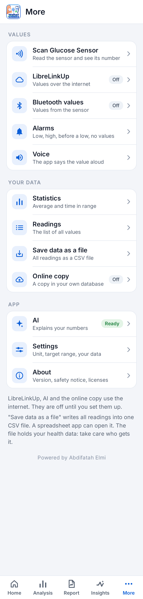

What it does
Scan with the phoneHold the phone on the sensor. The value, the arrow and the time come at once.
Values by themselvesOne value each minute from LibreLinkUp, or from the sensor over Bluetooth. LibreLink keeps its alarms.
Alarms before a lowA warning before the value goes low, with sound, vibration and speech.
Charts and reports14 days, time in range, statistics, and a PDF report you can send to your doctor.
Your data stays yoursEverything is on the phone. The three online parts are off until you switch them on.
Optional: AI explanationAsk for a plain explanation of your numbers, in English, Somali or Arabic.
The app




How to install
- Tap Download the app above. The file Walhad-GlucoseScan-v4.1.apk downloads.
- Open the file. Android asks “Allow from this source” — allow it for your browser.
- Press Install, then Open. Read the safety notice once and accept it.
The app is not on Google Play. It is signed with one key, so new versions install over old ones without losing your values.
Set it up in ten minutes
- Values by themselves (LibreLinkUp): in LibreLink, share your data with an e-mail, accept the invitation, then in this app: More → Values from LibreLinkUp → log in.
- Online copy: make a free project at supabase.com, run the set-up text the app gives you, and paste the project URL and key into the app. Your values then survive a lost phone.
- AI (optional): a key from aistudio.google.com.
The steps are written out one by one in the repository: SET-UP.md (LibreLinkUp, AI, online copy) and WHERE-TO-DEPLOY.md (which free plan to use and why). A beginner's order is in START-HERE.md.
Read this. This app is not a medical device. It was never tried with the real LibreLinkUp,
AI or Supabase services, and it does not replace your meter or your doctor. Keep LibreLink and its
alarms on. Never change insulin or medicine because of a number in this app.